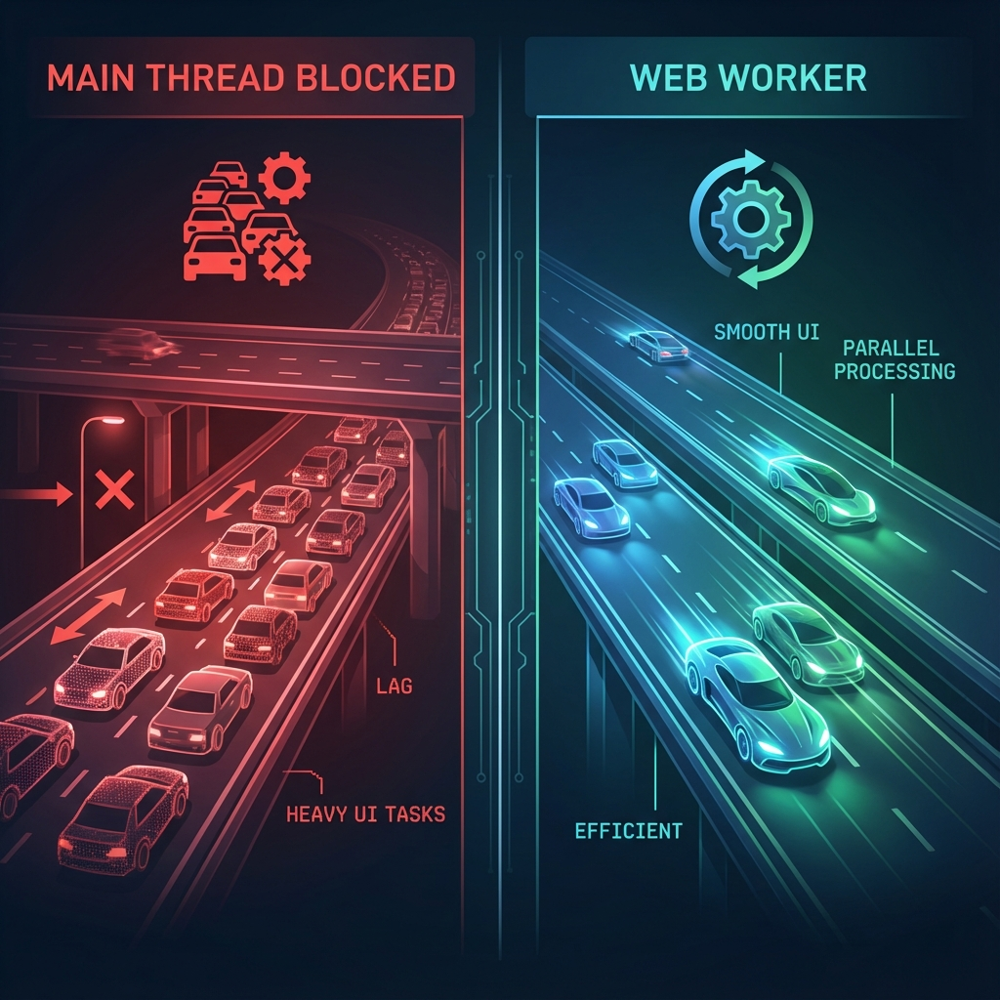
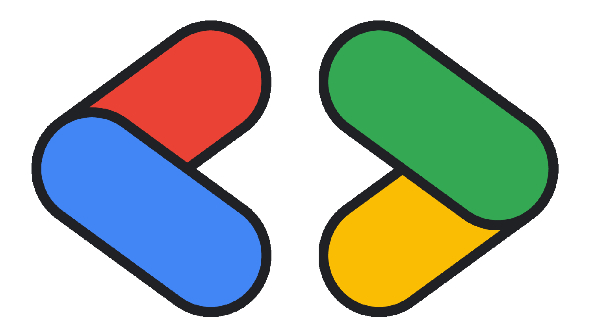

Usa las APIs de IA que Chrome tiene para ti

Engineering Manager at Twilio
GDE en Web Technologies
Comenzando
Habilita estas flags en chrome://flags:
- Prompt API for Gemini Nano
- Summarization API for Gemini Nano
- Writer/Rewriter API for Gemini Nano
Luego actualiza Optimization Guide On Device Model en chrome://components.
Cambiando el Paradigma
IA Tradicional
Usuario → Servidor → Respuesta
→
Web AI
Usuario ← Navegador → Modelo
Descentralización de la Inteligencia Artificial.
¿Por qué ejecutar IA en el navegador?
- Privacidad: Los datos nunca salen del dispositivo.
- Latencia: Cero viajes de red.
- Costo: $0 costos de servidor.
- Offline: Funciona sin internet.
Las Limitaciones
- Hardware: Depende de la GPU/RAM del usuario.
- Tamaño de Descarga: Modelos enormes (GBs).
- Batería: Consumo energético alto.
El Espectro de Web AI
BYOM
Bring Your Own Model
Tú envías el modelo (MediaPipe)
Built-in AI
Gemini Nano
El navegador incluye el modelo
Descripción General
- Modelo: Gemini Nano
- Distribución: Gestionado por Chrome
- Acceso: APIs de JavaScript simples
La API de Prompt
La “Navaja Suiza” de la IA Integrada.
- Conversación libre
- Sesiones con estado
- Genial para chatbots y consultas generales
Paso 1: Verificar Disponibilidad
Paso 2: Crear Sesión
// 2. Crear sesión (con monitor de descarga)
const session = await LanguageModel.create({
expectedInputs: [{ type: 'text', languages: ['es'] }],
expectedOutputs: [{ type: 'text', languages: ['es'] }],
systemPrompt: "Eres un asistente útil.",
monitor(m) {
m.addEventListener('downloadprogress', (e) => {
console.log(`Descargado ${e.loaded * 100}%`);
});
}
});Paso 3: Generación (Streaming)
Demo: Prompt Playground
Contando Tokens
// The API that returns the token count for a prompt changed between Chrome Stable and Canary
// and the method was renamed from `countPromptTokens(input)` to `measureInputUsage(input)`.
// The code below ensures both cases are handled.
if (session.countPromptTokens) {
cost = await session.countPromptTokens(value);
} else if (session.measureInputUsage) {
cost = await session.measureInputUsage(value);
}
console.log(`Tokens: ${count}`);API de Resumen
Optimizada para condensar texto.
tl;drteaserheadline
Paso 1: Disponibilidad
Paso 2: Crear Summarizer
Paso 3: Resumir
Demo: Summarization Playground
Paso 1: Disponibilidad (Detector)
Verifica si tu navegador soporta la detección de idioma.
Paso 2: Crear Detector
Paso 3: Detectar Idioma
Demo: Translation Playground
Paso 1: Disponibilidad (Writer)
Paso 2: Crear Writer
Paso 3: Escribir
Demo: Writer Playground
Paso 1: Disponibilidad (Rewriter)
Paso 2: Crear Rewriter
Diferencia: self.Rewriter vs self.Writer
Paso 3: Reescribir
Descripción General BYOM
- Uso: Soporte cross-browser, modelos específicos.
- Stack: WebGPU + WebAssembly.
- Librería: Google MediaPipe.
MediaPipe LLM Inference API
Ejecuta LLMs completamente en el dispositivo.
- Tareas: Generación de texto, recuperación de información, resúmenes.
- Modelos: Gemma 2B, Gemma-3n (Multimodal: Texto, Imagen, Audio).
- Privacidad: Todo sucede en el cliente.
Configuración Rápida
Instalar:
Descargar Modelo:
- Gemma-3n E4B o E2B (versiones “-Web”).
- Hugging Face Community
Inicialización
const genai = await FilesetResolver.forGenAiTasks(
"https://cdn.jsdelivr.net/npm/@mediapipe/tasks-genai@latest/wasm"
);
const llm = await LlmInference.createFromOptions(genai, {
baseOptions: { modelAssetPath: '/assets/gemma-3n-E4B-it-int4-Web.litertlm' },
maxTokens: 1000,
topK: 40,
temperature: 0.8
});
const response = await llm.generateResponse(inputPrompt);Multimodalidad (Gemma-3n)
Soporte para Imágenes y Audio.
Personalización con LoRA
Adaptación eficiente de modelos (Low-Rank Adaptation).
- Entrena pesos pequeños en tus datos.
- Carga dinámica en tiempo de ejecución.
Cargando el Modelo (Worker)
Clave: ¡Haz esto en un Web Worker!
Evita bloquear el hilo principal durante la carga pesada del modelo.
Ejecutando Inferencia
La Regla de Oro
NUNCA ejecutes inferencia en el Hilo Principal.
Congela la UI.
SIEMPRE usa un Web Worker.

Demo: Worker vs No-Worker
Respuestas en Streaming (SSE)
No esperes la respuesta completa.
Transmite tokens a medida que se generan.
Ejemplo Streaming Node.js
Gestionando Contexto
- 🧠 RAM Limitada: 4k-8k tokens en móviles.
- ✂️ Truncado: Corta el historial agresivamente.
- 🎯 System Prompts: Úsalos para definir comportamiento eficientemente.
Prompting One-Shot
¡Dale un ejemplo al modelo!
❌ Mal: “Clasifica esta reseña.”
✅ Bien: “Clasifica como Positiva/Negativa.
Ejemplo: ‘¡Me encanta!’ -> Positiva.
Ahora clasifica: ‘Lo odié.’”
Demo del Mundo Real
Reseñas de Productos
- 👤 Usuario escribe reseña.
- 🛡️ Local: Verificar toxicidad (Transformers.js).
- ✨ Local: Sugerir mejoras (Gemma).
Demo: Product Reviews
Soporte del Navegador
Built-in AI
Chrome Desktop
BYOM (WebGPU)
Chrome, Edge, Firefox
Recursos
- 📦
github.com/GoogleChromeLabs/web-ai-demos - 📚
developer.chrome.com/docs/ai - 🤖
ai.google.dev/edge/mediapipe
@sebasgojs
sebastian-gomez.com
youtube.com/@sebasgojs
Ve y construye algo mágico. ✨

www.sebastian-gomez.com - @sebasgojs